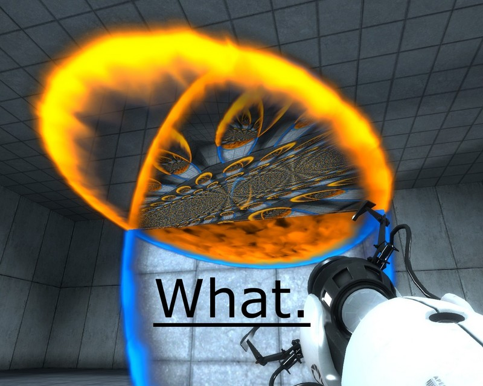

Recursion ~ "To Infinity! And BEYOND~~!!!! (at least until a stop-condition is met)"
posted on November 23, 2015

(Optional) Jump To Section....
How To Explain Recursion
Whenever people ask me to teach them recursion, I ask them: "Do you play videogames? If so, have you played "Portal?" " (If they say no, I ask them "Have you seen "Inception"?")
Positioning the portals in such a way in the game "Portal" demonstrates the idea of recursion. Anything entering the bottom portal will fall down from the top portal, and enter the bottom portal again (and fall out of the top portal, and enter the bottom portal again, etc.) due to gravity and the positions of the portals. Basically, it can be boiled down to "Is there a portal in the direction you are going? If yes, enter the portal and come out the other side. If not, then you will not enter the portal again and the "infinite loop" stops.
This will go on infinitely until some "stop-condition" is met (the "stop-conditions" here would be either the player-character removes or re-positions either of the portals, or if the player character enters the portal, she angles herself not to fall straight down into it, but to jump off to the side).
For people who have never played "Portal", here's the "Inception" explanation:
Cobb and his team enter someone's dream. Did they find the dream-layer that they want? If yes, they will stay there and "incept" the idea they want. If not, then they enter the person's dream in that dream. This goes on continually until they find the dream-layer that they want.
Recursion In Programming
Recursion sounds intimidating, but it's really not. Do you know how to use if-else statements? Do you know how to make loops (either for loops or while loops)? Do you know how to call a function/method? If you answer yes to any of those questions, then you are part of the way there.
Recursion in programming simply means this:
There is a function or method that gets called. As long as some condition is true, the function or method will call itself. (This can happen as long as the condition is true.) But if that condition becomes false (the aforementioned "stop-condition"), the function will stop calling itself and get out of the loop. The method would just keep calling itself, until some condition is met. This is the reason why putting the stop condition is really important. Or else, you'd end up with an infinite loop. But this is no different than creating an infinite loop with a regular for loop or while loop. And exactly like regular for-loops or while-loops, one must take care that the input of the recursively-summoned method must be able to tell which iteration or which layer it is working on. This means that the input to this recursively-called method needs to have a different input than the original input of the method. For example, doing something to iterate to the next item, or if you are working on a array, instead of re-inputting the array as the argument of this recursively-called method, the argument would be its element. Or you would never get out of the recursion.
{kind=link}
(Can you tell that I really love "Portal"? Actually, a lot of concepts in recursion were used to make the game, as evidenced by this person who was trying to learn how to program "Portal" from scratch. I also found in my research that other games that are not-"Portal" also use some form of recursion.)
{kind=link}
{kind=link}
A Demonstration Of Recursion
Originally, I was going to use these kinds of images as a way to demonstrate recursion, but the images don't portray any "stop-condition". These "Portal" videos will have to do. I thought that they make good analogies, because entering a portal is the equivalent of calling the method. The method would just keep calling itself, until some condition is met. This is the reason why putting the stop condition is really important. Or else, you'd end up with an infinite loop. But this is no different than creating an infinite loop with a regular for loop or while loop. And exactly like regular for-loops or while-loops, one must take care that the input of the recursively-summoned method must be able to tell which iteration or which layer it is working on. This means that the input to this recursively-called method needs to have a different input than the original input of the method. For example, doing something to iterate to the next item, or if you are working on a array, instead of re-inputting the array as the argument of this recursively-called method, the argument would be its element. Or you would never get out of the recursion.
{kind=link}
{kind=link}
{kind=link}
{kind=link}
{kind=link}
{kind=link}
{kind=link}
{kind=link}
I know that I'm repeating myself (no pun intended), but these are really important things to think about if you are using recursion. Or else you're gonna have a bad time.
One of the easiest things used to demonstrate recursion is calculating for a factorial. A factorial is a mathematical operation where a number is multiplied by the minus-1 version of itself until the minus-1 version of itself is 1. (Except for Zero. As a rule, the factorial of Zero is always 1 no matter what.)
Here's the regular non-recursion version of calculating a factorial.
# Ruby
def factorial(number)
return 1 if number == 0
factorial = number
for next_number in 2...number
factorial *= next_number
#longhand is factorial = factorial * next_number
end
factorial
end
# or
def factorial(number)
return 1 if number == 0
factorial = number
next_number = number - 1
while next_number >= 2
factorial *= next_number
#longhand is factorial = factorial * next_number
next_number -= 1
#longhand is next_number = next_number - 1
end
factorial
end
// JavaScript
var factorial = function(number) {
if (number === 0) {
return 1;
}
var factorial = number;
while (number > 1) {
factorial *= number - 1;
number--;
}
return factorial;
}
# Python
def factorial(number):
if number == 0: # This is our "stop-condition".
return 1
while (number > 1):
# number is multiplied by the minus-1 version of itself
number * (number - 1)
number -= 1;
And here is how to do it with recursion:
# Ruby
def factorial(number)
if number == 0 # This is our "stop-condition".
return 1
else
# number is multiplied by the minus-1 version of itself
return number * factorial(number - 1)
end
end
// JavaScript
var factorial = function(number) {
if (number === 0) {
// This "number === 1" is our "stop-condition".
return 1;
} else {
// number is multiplied by the minus-1 version of itself
return number * factorial(number - 1);
}
}
# Python
def factorial(number):
if number == 0: # This is our "stop-condition".
return 1
else
# number is multiplied by the minus-1 version of itself
return number * factorial(number - 1)
Take note that when the function is called inside itself, its argument/parameter is different than the original. The argument/parameter here is number - 1, so that the code knows to iterate to the next lowest number.
"So," you may be asking, "why can't we just use normal loops?" For one thing, the code is cleaner and easier to maintain -- the less lines of code, the less places a mess-up can happen. For another thing, coding in recursion sounds more like speaking in natural language. But! The true power of recursion comes when we DON'T KNOW how many times we are supposed to loop.
Take the case of when we have nested data structures, and we want to do stuff to the elements of these data structures. These thing COULD be done with regular programming methods:
# JavaScript
number_array = [5, [10, 15], [20,25,30], 35]
# Pseudocode:
#Go through each item in number array
#Each item we will check if it is array
#If element is an array we will run another each loop
#Inside this each loop we will add 5 to each element
#if element is not array we will add 5
for element in (0...number_array.length) do
if number_array[element].kind_of?(Array)
for inner in (0...number_array[element].length) do
number_array[element][inner] += 5
end
else
number_array[element] += 5
end
end
print number_array
puts
# refactored:
number_array.map! { |element|
if element.kind_of?(Array)
element.map! {|inner| inner + 5}
else
element + 5
end
}
But what would happen if there are inner-inner-INNER nested data structures? How will we hand-code that? With too many nested for-loops, that's for sure! Seriously, are you going to hand-code all of that!?!?!?!? There is a better way! (Recursion is here to save the day!!)
number_array = [5, [10, 15], [20,25,30], 35]
def getInnerArray(inputArray)
for element in (0...inputArray.length) do
if inputArray[element].kind_of?(Array)
getInnerArray(inputArray[element])
else
inputArray[element] += 5
end
end
end
p getInnerArray(number_array)
Take note that in the recursively-called getInnerArray, its argument is NOT the original inputArray, but it is inputArray[element]. This needs to be done, or else, the recursion will never go deeper into the nested array.
Once again, here is the recap of how recursion works:
There is a function or method that gets called. As long as some condition is true, the function or method will continuously call itself. But if that condition becomes false (the aforementioned "stop-condition"), the method/function will stop calling itself and get out of the loop. The method would just keep calling itself, until some condition is met. This is the reason why putting the stop condition is really important. Or else, you'd end up with an infinite loop. But this is no different than creating an infinite loop with a regular for loop or while loop. And exactly like regular for-loops or while-loops, one must take care that the input of the recursively-summoned method must be able to tell which iteration or which layer it is working on. This means that the input to this recursively-called method needs to have a different input than the original input of the method. For example, doing something to iterate to the next item, or if you are working on a array, instead of re-inputting the array as the argument of this recursively-called method, the argument would be its element. Or you would never get out of the recursion.
Additional Musings
As mentioned in one of my previous blog posts, I find it fascinating that the more and more I delve into coding and software engineering, the more I find that the concepts have a lot in common with philosophy.
For example, our current topic is recursion. You can look at the sample code above, and compare it with the examples in these links:
- Gödel, Escher, Bach by Douglas Hofstadter
- The idea of "Infinite regress" by Aristotle
- Infinite regress in optics is the formation of an infinite series of receding images.
- the idea of "infinite regress" itself comes from the idea of Self-reference.
Additional References And Resources
- http://algosaur.us/ - “To iterate is human, to recurse, divine.” – A guide to Recursion
- prateekvjoshi.com - Understanding Recursion
- programmers.stackexchange.com - How do I explain “Recursion” to a 8 years old kid?
- logos.cs.uic.edu - Recursion (This one has a lot of good examples.)
- cs1110.cs.virginia.edu - Lecture 24 - Methods and Recursion
- vaidehijoshi.github.io/blog - To Understand Recursion, You Must First Understand Recursion